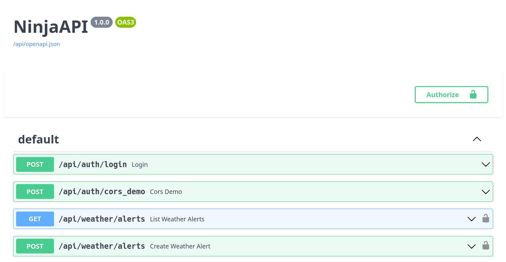
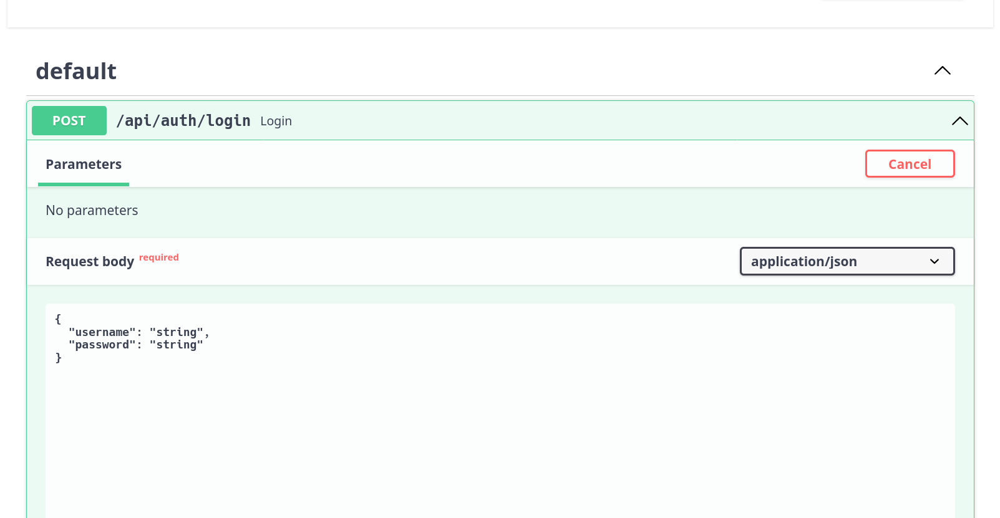
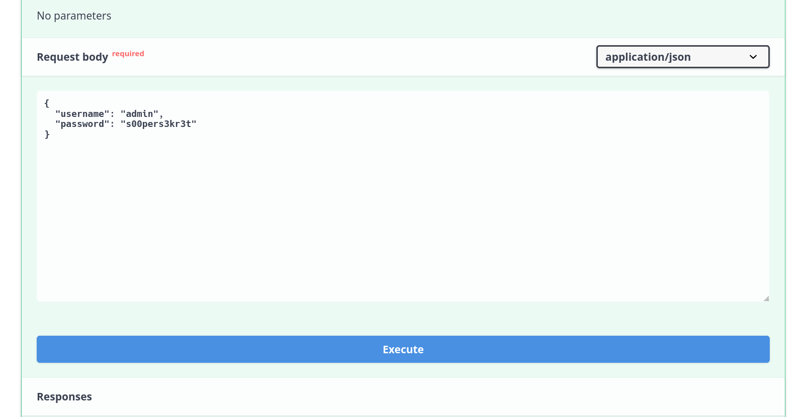
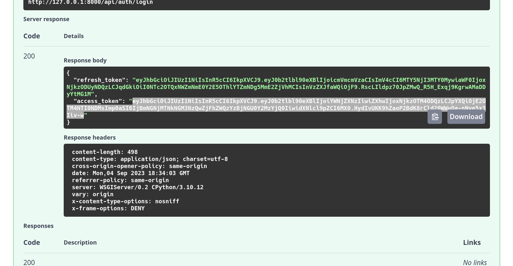
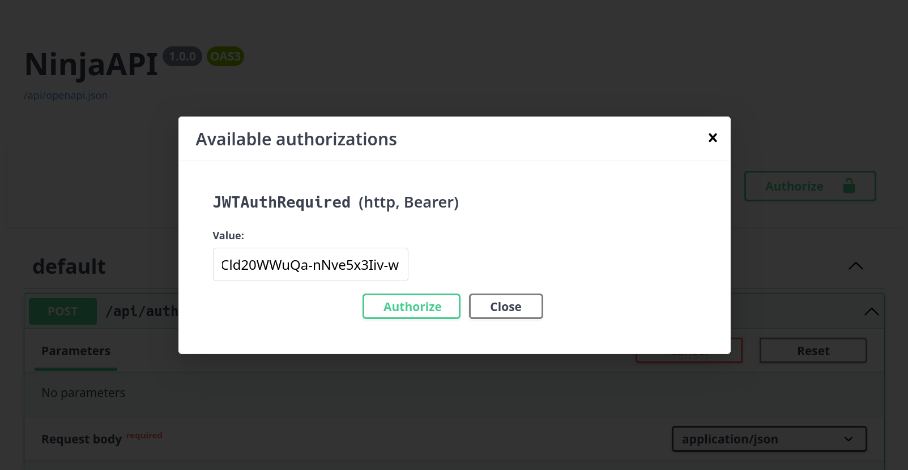
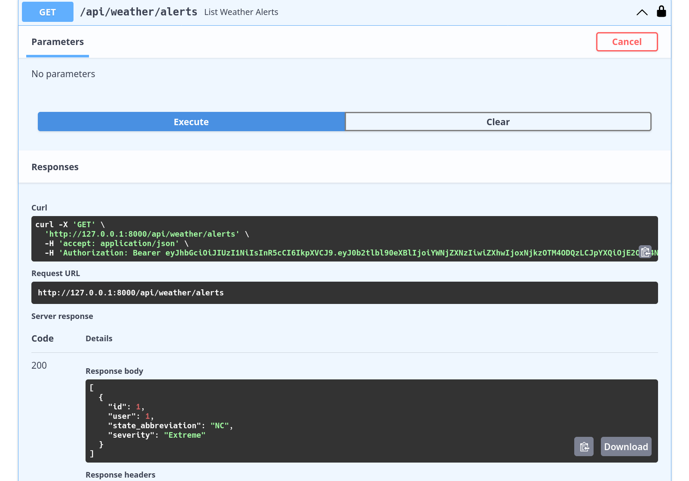
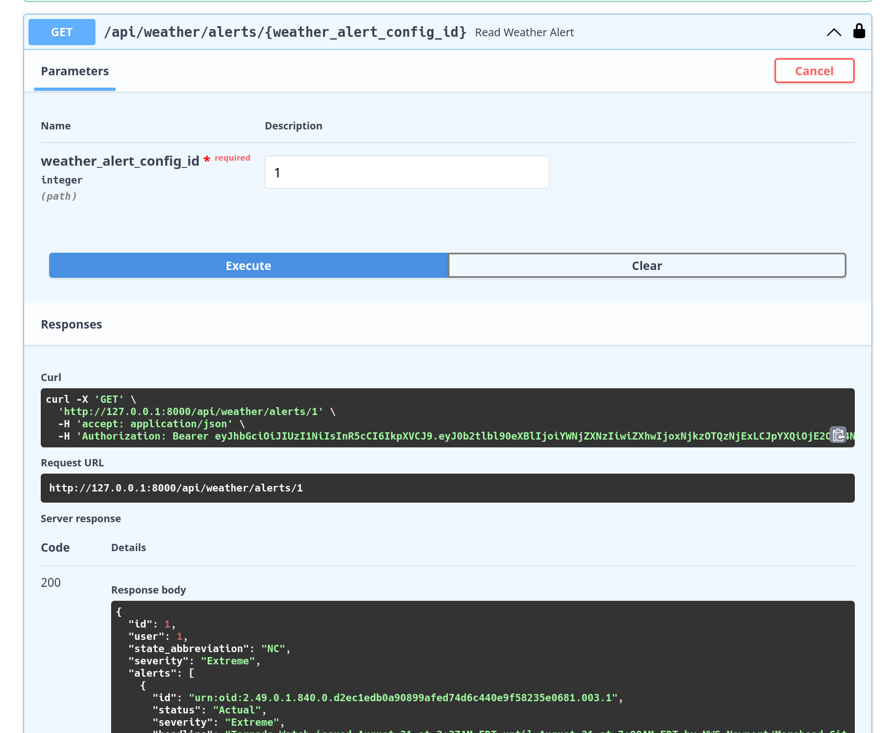

04 API Endpoints
Goals
Today we're going to learn how to:
- Interact with our API
- Authenticate requests
- Modify endpoints
This lab will also give you a quick overview of the Django Ninja plugin that we're using for the API. It provides simple request deserialization and response serialization using Python type annotations. For in depth info, consult the Django Ninja docs.
API docs viewer
Django Ninja provides a documentation viewer out of the box that we can use
to see the shapes of API requests and responses, and interact with
endpoints. Make sure you're running the API (docker-compose up -d), and
then navigate to the following URL to view the docs:
http://127.0.0.1:8000/api/docs.

JWT authentication
Without going into too much detail, the API uses JSON Web Tokens to authenticate requests.
Note
If you're curious how the API enforces JWT authentication, check out
auth/backends.py, config/urls.py and the
Django Ninja Auth docs.
In order to call endpoints you'll need to generate one using your superuser (admin) credentials you previously set up, and tell the docs site to use it.
-
Click into the
POST /api/auth/loginendpoint in the docs, press Try it out:
-
Populate your superuser username (admin) and password in the Request body, then press Execute

-
Copy the JWT out of the Response body >
access_tokenfield
-
Scroll back to the top of the page, click Authorize, and paste the JWT into the text box that appears

-
Now you're ready to call the other endpoints. Scroll down and execute the
GET /api/weather/alertsendpoint. You should see the one you created in Django Admin earlier
Warning
The docs site doesn't save your login info when you reload it. So, to save some time it's a good idea paste your JWT into your notes for quick reference. It will be good for 24 hours from the time you generate it.
Working with endpoints
Now that we're set up to make calls to the API, let's learn some more about how to expose endpoints with Django Ninja.
Routers and URLs
Two files you'll see in every Django project are urls.py and views.py.
Django uses URLs to map URL paths to views that you've defined. Django Ninja
takes this a step further, and introduces the concept of a Router that handles
sub-paths for a corner of your API.
Consider this example from config/urls.py.
from auth.views import router as auth_router
from weather.views import router as weather_router
api = NinjaAPI(auth=JWTAuthRequired())
api.add_router("/auth/", auth_router)
api.add_router("/weather/", weather_router)
urlpatterns = [
path("status/", include("health_check.urls")),
path("admin/", admin.site.urls),
path("api/", api.urls),
]
It exposes our status page, admin page, and the API. But, it leaves routing
anything under api/ to Django Ninja. We've included two routers under the
Ninja API that will handle requests to /api/auth/ and /api/weather/.
Views and (de)serialization
Now that we have an idea of how Django configures GET /api/weather/alerts,
how do we actually write the code that handles requests to that path? To see,
checkout weather/views.py.
router = Router()
@router.get("/alerts", response=list[WeatherAlertResponse])
def list_weather_alerts(request) -> list[WeatherAlertConfig]:
return WeatherAlertConfig.objects.all()
Here we've created the router that we wired into Django Ninja above, and
tell it that GET requests to /alerts (under /api/weather) should be
handled by the list_weather_alerts function.
But, what does the function actually do? It loads all WeatherAlertConfig
records from the database and returns them to the user. This is the same
model that we modified in the prior lab.
Ok so, how does Django Ninja actually convert the model instances into JSON
that the browser understands? This is part of the magic of Django Ninja. In
the call to the @router.get decorator, we say the response will be a list
of WeatherAlertResponses:
class WeatherAlertResponse(ModelSchema):
class Config:
model = WeatherAlertConfig
model_fields = "__all__"
Django Ninja provides a special ModelSchema class that we can inherit to
define the shape our requests and responses. In some cases you manually set
the fields, but here we simply tell it to mirror the shape of our model.
Django Ninja handles the rest.
Update the API
Now it's your turn to update the API. Let's handle the new severity field
we added to WeatherAlertConfig in the last lab.
Wire severity into endpoints
Within weather/views.py, notice that we have CRUD endpoints that line up
with their corresponding HTTP methods. We'll need to make sure we handle the
new severity field in these.
The WeatherAlertRequest schema defines the shape of requests that modify
a weather alert config. Add severity here so the API includes it when
creating and updating alerts:
from .models import Severity
class WeatherAlertRequest(Schema):
state_abbreviation: str
severity: Severity
Endpoints that rely on this schema will automatically have access to the new severity field when working with requests.
Update service call
services are not a Django concept, but are a good place to drop complex
business logic and interactions with third parties. For example, the API has a
NationalWeatherService class in weather/services.py
that handles interactions with the National Weather Service API. Let's get that working with the
new severity field.
-
First, update
_get_alertsto include the severity:def _get_alerts(self, area: str, severity: str, limit: int) -> dict: """Fetches alerts from the National Weather Service API.""" res = requests.get( self.ALERTS_URL, params={"area": area, "severity": severity, "limit": limit}, ) res.raise_for_status() # Raises error if API returned HTTP 4XX or 5XX status. return res.json() -
Next, update the cache key we use to ensure the API caches repeated calls to the National Weather Service API:
ALERTS_CACHE_KEY_TEMPLATE: str = f"{__name__}.alerts.{{area}}.{{severity}}.{{limit}}" -
Finally, update the call to fetch and cache the National Weather Service data:
alerts = cache.get_or_set( self.ALERTS_CACHE_KEY_TEMPLATE.format( area=config.state_abbreviation, severity=config.severity, # Update here limit=limit, ), default=partial( self._get_alerts, area=config.state_abbreviation, severity=config.severity, # And here limit=limit, ), )
Solution
Once you're done with the edits, weather/services.py should look something
like this:
import logging
from enum import Enum
from functools import partial
from typing import Optional
import requests
from django.core.cache import cache
from ninja.schema import Schema
from .models import WeatherAlertConfig
logger = logging.getLogger(__name__)
class WeatherAlertStatus(str, Enum):
ACTUAL = "Actual"
EXERCISE = "Exercise"
SYSTEM = "System"
TEST = "Test"
DRAFT = "Draft"
class WeatherAlertSeverity(str, Enum):
EXTREME = "Extreme"
SEVERE = "Severe"
MODERATE = "Moderate"
MINOR = "Minor"
UNKNOWN = "Unknown"
class WeatherAlert(Schema):
"""Lightweight entity based on Alert from Weather API.
For docs see Schemas > Alert: https://www.weather.gov/documentation/services-web-api
"""
id: str
status: WeatherAlertStatus
severity: WeatherAlertSeverity
headline: str
description: str
instruction: Optional[str]
class NationalWeatherService:
"""Utilities to retrieve data from the National Weather Service API.
For docs see: https://www.weather.gov/documentation/services-web-api
"""
ALERTS_URL: str = "https://api.weather.gov/alerts"
ALERTS_CACHE_KEY_TEMPLATE: str = f"{__name__}.alerts.{{area}}.{{severity}}.{{limit}}"
def _get_alerts(self, area: str, severity: str, limit: int) -> dict:
"""Fetches alerts from the National Weather Service API."""
res = requests.get(
self.ALERTS_URL,
params={"area": area, "severity": severity, "limit": limit},
)
res.raise_for_status() # Raises error if API returned HTTP 4XX or 5XX status.
return res.json()
def get_alerts(
self, config: WeatherAlertConfig, limit: int = 10
) -> list[WeatherAlert]:
"""Fetches alerts for a given WeatherAlertConfig."""
alerts = cache.get_or_set(
self.ALERTS_CACHE_KEY_TEMPLATE.format(
area=config.state_abbreviation,
severity=config.severity, # Update here
limit=limit,
),
# default can be a value or a zero-argument callable. "partial" takes a callable
# (self._get_alerts) and its arguments (anything, but "area" and "limit" in this case),
# and returns a new callable. This defers execution of self._get_alerts with the
# given arguments until partial's return-value itself is called.
default=partial(
self._get_alerts,
area=config.state_abbreviation,
severity=config.severity, # And here
limit=limit,
),
)
weather_alerts = []
for alert_data in alerts.get("features", []):
properties = alert_data["properties"]
weather_alerts.append(
WeatherAlert(
id=properties["id"],
status=WeatherAlertStatus(properties["status"]),
severity=WeatherAlertSeverity(properties["severity"]),
headline=properties["headline"],
description=properties["description"],
instruction=properties["instruction"],
)
)
if weather_alerts:
logger.debug("Found alerts.", extra={"count": len(weather_alerts)})
else:
logger.warning("Got no weather alerts!", extra={"area": config.state_abbreviation})
return weather_alerts
Call alerts endpoint
Let's confirm that our update worked. Go back to the API docs ( http://127.0.0.1:8000/api/docs). You may need to Authorize again if you've reloaded the page.
- Scroll down to
GET /api/weather/alerts/{weather_alert_config_id}. - Click Try it out, and provide a
weather_alert_config_idof 1. -
Observe that you get weather alerts for the severity you configured in your model (e.g. Extreme).
